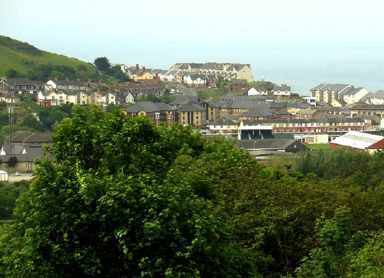

© 2021 Festival Art and Books. All rights reserved.

An overview of the town nearest the Festival of the Shire
Aberystwyth is the foremost holiday resort and it is also the administrative centre of the west coast of Wales. The University of Wales Aberystwyth and the National Library are located in the town.
The town is positioned between three hills and has two magnificent beaches available. It also can boast some castle ruins, a Victorian pier and a charming harbour. Upon the surrounding hills are the visible remains of a iron age fort and also a monument to Wellington. If the visitor climbs these hills, they offer stunning views of Cardigan Bay.
Aberystwyth is a University town with around seven thousand students, ensuring it a vibrant throughout the year and not just during summertime. For those in search of a hostelry, there are at present ‘only’ fifty pubs left in Aberystwyth!
The seafront boasts some impressive Victorian and Edwardian buildings of 4 to 5 storeys high. The wide promenade protects the buildings from the ravages of the Irish Sea and provides plenty of space to sit and soak up the sun and look at the surrounding hills and mountains. On a clear day from the town you can see the tallest mountain in Wales, Snowdon. The two beaches are divided by the castle.
The harbour was once one of the busiest in Wales and is fed by the rivers Ystwyth and Rheidol - which is the steepest river in Britain. Geographically, Aberystwyth may be considered isolated from the rest of Wales. However, this isolation made it necessary for the local people to look after themselves and over the years it has acquired more resources than a town of this size would normally have. It is now the centre of local rural life and is visited by many to sample the numerous cafés, bars, and restaurants including, Chinese, Indian, Italian and Mediterranean cuisine.
The local weather is dominated by the sea and the Gulf Stream which warms the whole region and makes for pleasurable visiting.
The Aberystwyth Electric Cliff Railway is the longest electric cliff railway in Britain. It climbs Constitution Hill from the northern end of the town's promenade with trains running every few minutes during the spring, summer and early autumn.
Upon reaching the summit the observer is rewarded with an amazing panorama which on a clear day extends as far as the Preseli Hills in Pembrokeshire to the south, while the whole expanse of Cardigan Bay opens out to the west and the mountains of Snowdonia to the North can also be viewed. There is a café at the summit and the famous Camera Obscura. The present building is a recreation of the Victorian original. As the carefully-balanced mirror revolves, detailed views of the surrounding countryside are thrown onto the table in the centre of the building.
The Cliff Railway also offers tourists the best start to the beautiful walk over the cliff-tops to Clarach Bay, from where you can if you wish catch a bus back to Aberystwyth.
(pictures courtesy of Welsh Tourism and Wikipaedia)
